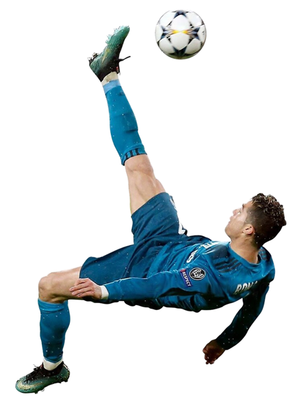

Cristiano Ronaldo dos Santos Aveiro (n. 5 februarie 1985, Funchal, Madeira, Portugalia), cunoscut ca
Ronaldo, este un fotbalist portughez, care evoluează în prezent la clubul Manchester United și la echipa
națională de fotbal a Portugaliei.
Ronaldo este considerat unul din cei mai buni fotbaliști din toate timpurile,
alături de rivalul său Lionel Messi. Este primul fotbalist portughez care a câștigat Balonul de Aur de
cinci ori,[12][13] și al doilea jucător după Messi care câștigă Gheata de aur de trei ori. La Manchester
United și Real Madrid, Ronaldo a câștigat de trei ori Premier League, La Liga, FA Cup, de două ori
Football League Cup și Copas del Rey, FA Community Shield, Supercupa Spaniei, de 5 ori Liga Campionilor
UEFA, o Supercupa Europei și de trei ori Campionatul Mondial al Cluburilor FIFA.
În ianuarie 2014, la vârsta de 28 de ani, Ronaldo a marcat cel de-al 400-lea său gol la nivel de
seniori.[14] În ianuarie 2015 el a fost numit cel mai bun fotbalist portughez din toate timpurile, de
către Federația Portugheză de Fotbal, în cadrul celei de-a 100-a ceremonii aniversare.[15][16]
Ronaldo și-a început cariera de fotbalist la juniorii echipei Andorinha, pentru care a jucat timp de doi
ani, fiind transferat ulterior de C.D. Nacional. În 1997 a ajuns la Sporting Lisabona, fiind promovat la
echipa mare de Ladislau Bölöni. Jocul său i-a atras atenția antrenorului de atunci al lui Manchester
United, Alex Ferguson, care l-a adus la echipă în schimbul a 12,2 milioane de lire sterline. În 2004 a
câștigat primul trofeu, Cupa FA. În 2009 a devenit cel mai scump transfer din toate timpurile, Real
Madrid plătind pentru el 94 de milioane de euro (80 de milioane de lire sterline).
Ronaldo a debutat pentru Portugalia în august 2003, la vârsta de 18 ani. Are peste 100 de selecții și a
fost convocat, începând cu Euro 2004, la trei Campionate Europene și alte trei Mondiale. Este primul
fotbalist portughez care a înscris mai mult de 50 de goluri și este golgheterul Campionatului European
(incluzând faza calificărilor) cu 23 de goluri.
Pe 14 octombrie 2019, într-un meci cu Ucraina, încheiat 1-2, Ronaldo a înscris din penalti golul cu
numărul 700 din carieră.